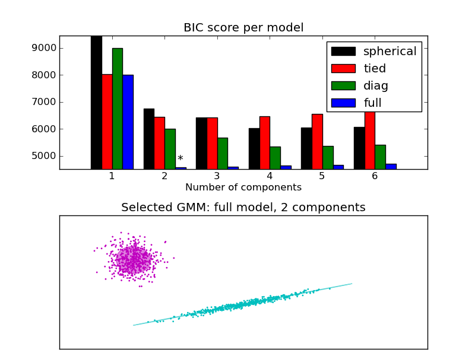

Gaussian Mixture Model Selection¶
This example shows that model selection can be perfomed with Gaussian Mixture Models using information-theoretic criteria (BIC). Model selection concerns both the covariance type and the number of components in the model. In that case, AIC also provides the right result (not shown to save time), but BIC is better suited if the problem is to identify the right model. Unlike Bayesian procedures, such inferences are prior-free.
In that case, the model with 2 components and full covariance (which corresponds to the true generative model) is selected.
Python source code: plot_gmm_selection.py
print __doc__
import itertools
import numpy as np
from scipy import linalg
import pylab as pl
import matplotlib as mpl
from sklearn import mixture
# Number of samples per component
n_samples = 500
# Generate random sample, two components
np.random.seed(0)
C = np.array([[0., -0.1], [1.7, .4]])
X = np.r_[np.dot(np.random.randn(n_samples, 2), C),
.7 * np.random.randn(n_samples, 2) + np.array([-6, 3])]
lowest_bic = np.infty
bic = []
n_components_range = range(1, 7)
cv_types = ['spherical', 'tied', 'diag', 'full']
for cv_type in cv_types:
for n_components in n_components_range:
# Fit a mixture of gaussians with EM
gmm = mixture.GMM(n_components=n_components, covariance_type=cv_type)
gmm.fit(X)
bic.append(gmm.bic(X))
if bic[-1] < lowest_bic:
lowest_bic = bic[-1]
best_gmm = gmm
bic = np.array(bic)
color_iter = itertools.cycle(['k', 'r', 'g', 'b', 'c', 'm', 'y'])
clf = best_gmm
bars = []
# Plot the BIC scores
spl = pl.subplot(2, 1, 1)
for i, (cv_type, color) in enumerate(zip(cv_types, color_iter)):
xpos = np.array(n_components_range) + .2 * (i - 2)
bars.append(pl.bar(xpos, bic[i * len(n_components_range):
(i + 1) * len(n_components_range)],
width=.2, color=color))
pl.xticks(n_components_range)
pl.ylim([bic.min() * 1.01 - .01 * bic.max(), bic.max()])
pl.title('BIC score per model')
xpos = np.mod(bic.argmin(), len(n_components_range)) + .65 +\
.2 * np.floor(bic.argmin() / len(n_components_range))
pl.text(xpos, bic.min() * 0.97 + .03 * bic.max(), '*', fontsize=14)
spl.set_xlabel('Number of components')
spl.legend([b[0] for b in bars], cv_types)
# Plot the winner
splot = pl.subplot(2, 1, 2)
Y_ = clf.predict(X)
for i, (mean, covar, color) in enumerate(zip(clf.means_, clf.covars_,
color_iter)):
v, w = linalg.eigh(covar)
if not np.any(Y_ == i):
continue
pl.scatter(X[Y_ == i, 0], X[Y_ == i, 1], .8, color=color)
# Plot an ellipse to show the Gaussian component
angle = np.arctan2(w[0][1], w[0][0])
angle = 180 * angle / np.pi # convert to degrees
v *= 4
ell = mpl.patches.Ellipse(mean, v[0], v[1], 180 + angle, color=color)
ell.set_clip_box(splot.bbox)
ell.set_alpha(.5)
splot.add_artist(ell)
pl.xlim(-10, 10)
pl.ylim(-3, 6)
pl.xticks(())
pl.yticks(())
pl.title('Selected GMM: full model, 2 components')
pl.subplots_adjust(hspace=.35, bottom=.02)
pl.show()